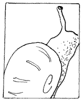

Ch'n'est pon par les cônes qu'nou dit la véthité
“Pouortchi,” jé d'mandis à Papa eune belle arlévée dans l'parleux quand i' 'tait à attatchi un p'tit ais à la muthâle, “Pouortchi qu'ous avez eune collection d'dés à couôtre?”
Baf! “Bein,” dit Papa en martélant des clious. Baf! “Ch'est qu'Manman.....” Baf! “...en fit eune collection....” Baf! “....y'a d's années...” Baf! “...et chenna m'fait penser étout à mes jannes jours quand....” Baf! “...j'soulais fèrmer des colînmachons....” Baf!
|

un colînmachon

|
“Tu fèrmais des colînmachons, Papa?”
“Bein seu,” i' dit en m'ttant bas l'marté et r'gardant lé p'tit ais en bouais sus la muthâle. “L'êl'vage dé colînmachons soulait êt' hardi împortant pouor l'agritchultuthe en Jèrri.”
“L'êl'vage dé colînmachons, Papa!” qué j'excliâmis. “Ch'n'est pon vrai!”
“Si-fait-dgia, man p'tit! Tu sai qu'ches Français mangent les colînmachons touos les jours et don i' n'y'a pon assez d'ches p'tites bêtes en France pouor satisfaithe lus appétit. Achteu ch'est les pays d'l'Êst - la Chinne, l'Îndonésie, la Mongolie et l'Sîngapour - tch'exportent des bat'lées et d's avionnées d'colînmachons en Ûrope. Mais temps pâssé Jèrri en êl'vait un amas d'colînmachons pouor env'yer en France.”
“Pouortchi qu'i' mangent les colînmachons, Papa? I' sont vlînmeurs!”
“Il' en aiment lé goût - sustout rôtis atout d'l'ail.”
“Eeeuuh! Ch'est-i' malaûc'theux!”
“Nou-fait,” dit Papa. “Pas pus qu'les baînis, ou les coques, ou les vlicots, tu sai. Et si nou fait eune bouonne êtchuîvée d'colînmachons, chenna fait du bein. Véthe, ichîn en Jèrri avant les méd'cinnes modèrnes nou soulait donner du sitho d'colînmachons ès malades. Ch'est eune vielle èrmiède.”
“Chenna m'donn'nait l'tchoeu d'vômi, Papa.”
“I' n'fallait pon s'pliaindre - un colînmachon par jour garde lé docteu siez li. Mais ches couques Français ont toutes les manniéthes dé prépather les colînmachons,” dit Papa en pliaichant les dés à couôtre à Manman sus lé p'tit ais. “Y'a l's omelettes ès colînmachons, les pâtés d'colînmachons, les podîns d'colînmachons, les filets d'colînmachons, les gâches dé colînmachons, les colînmachons Thèrmidor, les steaks dé colînmachon et tout chenna.”
“Coumme tchi qu'nou fèrme les colînmachons, Papa? J'éthais creu qu'nou pouôrrait aisîement les happer - i' n'vont pon trop vite, valet!”
“Mais pouor rassasier ches Français, il en faut un tas, et nou n'en trouv'thait pon assez dans les creux d'muthâle. Nânnîn, i' faut l's êl'ver sus des fèrmes à colînmachons, auve des p'tites êtabl'yes pouor les garder à l'abri des mêles et des grives tchi les mang'geaient. Mais ch'est coumme les ouaîsieaux, les poules à batt'tie n'ont pon l'même goût qu'les cheinnes tchi peuvent couôrre à banon, et ouaithe qu'les colînmachons à batt'tie sont saufs dans lus êtabl'yes, i' faut les laîssi couôrre dans l'clios à seule fîn d'amender la qualité d'la viande.”
“Mais les grives lus en vont les mangi!” j'objectis.
“Et né v'là pouortchi qu'dans ma jannèche j'fus empliyé sus eune fèrme dé même coumme un gardeux d'colînmachons. Ma djobbe 'tait d'laîssi l'troupé d'colînmachons hors dans l'clios dans l'matîn et d'chasser l's ouaîsieaux duthant la journée. Pis i' fallait dgider ches p'tites bêtes à cônes d'èrtou dans l'êtabl'ye quand il' avaient mangi assez et ieu assez d'exèrcice.”
“Coumme tchi qu'tu dgidais les colînmachons, Papa?”
“Bein, tu sai, ch'est d'même qué pouor les brébis. Pouor dgider les brébis nou fait sèrvi un tchian - chein qu'nou s'appelle un tchian bèrger. As-tu veu ches tchians à la télé? Nou lus donne des c'mandes en sûffliant.”
“Véthe, Papa, j'ai veu ches tchians bèrgers à la télé, mais nou n'pouôrrait pon faithe sèrvi ches tchians-là pouor dgider les colînmachons. I' sont bein trop grands!”
“Exactément,” rêponnit Papa, en rarrangeant l'empliaichement des dés sus l'ais jusqu'à ch'qu'i' fûssent touos parfaitement pliaichis. “Et né v'là pouortchi qu'j'soulêmes entraîner des gerbils.”
“Des gerbils!”
“Véthe-dgia, ches p'tits annimaux sont hardi întelligents et faîthaient des hardi bouôns gerbils bèrgers pouor dgider les colînmachons. Nou sûffliait et i' couothaient par chîn et par là à contrôler les p'tites bêtes à cônes.”
“Papa!”
“Oh, ch'est d'la puthe véthité, j't'asseûthe. Mais tch'est qu'tu pense des dés à Manman sus ch't ais: sont-i' bein arrangis?”
“Oui, Papa, i' sont bieaux. Mais, pouortchi qu'ches dés t'font penser à la fèrme à colînmachons?”
“Sîmpliément, nou soulait faithe sèrvi des dés à couôtre pouor la traithie d'ches p'tites bêtes à cônes-là!”
Papa est raide bouôn atout san marté et ses clious, mais il est un fichu vièr menteux.
Geraint Jennings
Avri 2003
Viyiz étout: